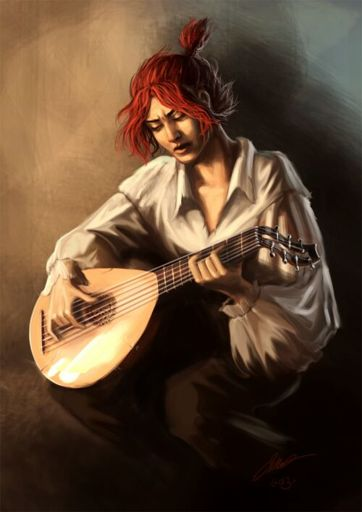

My name is Daniel Valdés, this is a fan page about The name of wind, im doing this with the goal of improve my programming skills.
Los libros son

I have stolen princesses back from sleeping barrow kings. I burned down the town of Trebon. I have spent the night with Felurian and left with both my sanity and my life. I was expelled from the University at a younger age than most people are allowed in. I tread paths by moonlight that others fear to speak of during day. I have talked to Gods, loved women, and written songs that make the minstrels weep. My name is Kvothe. You may have heard of me
There are three things all wise men fear: the sea in storm, a night with no moon, and the anger of a gentle man.”
Este es el libro3
Los personajes principales son
Este es kvothe
Esta es Denna